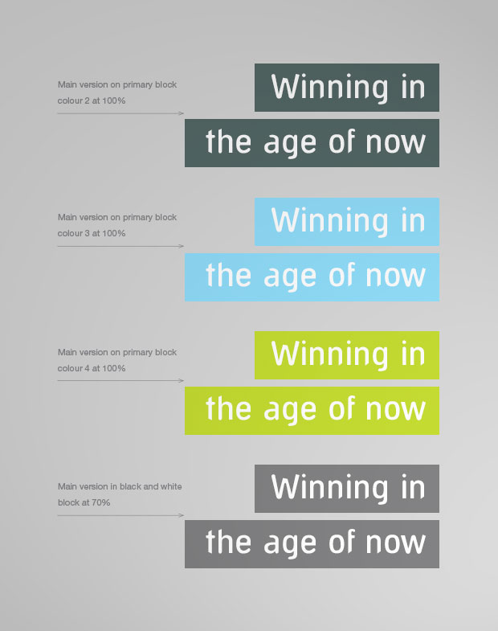
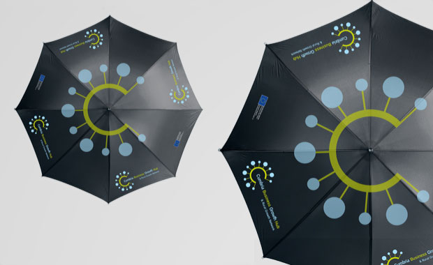

The brand really captures the essence of what Cumbria Business Growth Hub is all about and has helped to deliver a strong regional profile…

Cumbria Business Growth Hub is the focus for a co-ordinated programme to support small and medium sized businesses operating in Cumbria. SLJ Media was awarded the contract to design and develop a distinctive brand that would work as the principle identifier for all CBGH programme initiatives and activities. Our approach was to design a brand that would successfully reflect the nature of the support programmes available and could be used across multiple applications from printed communications and marketing aids to websites and online resources.
The brand really captures the essence of what Cumbria Business Growth Hub is all about and has helped to deliver a strong regional profile…